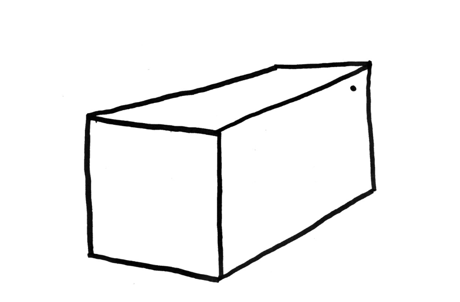

IN THE BEGINNING we kept biological cats as companions. We loved them, fed them, played with them, cuddled them, slept with them and built them their own condo universes. We pleaded for their affection and comfort. Pleaded and pleaded and pleaded.
❡
This semi-requited desire had us primed when we were introduced to the iPhone in 2007. Everything changed. Suddenly smart phones were always with us. They was tucked in our pockets, glowing in our beds at night, joining us at dinner and on our dates. They brought us presents. Better presents than dead mice and birds. Presents like likes. And loves. And notifications. And news. The iPhone reflected us back to ourselves in tinted, decorated selfies. A BOND DEVELOPED. Going anywhere without your phone became unimaginable.
❡
While our in-person relationships take place in real-time, our smart phone interruptions take place in REALER TIME. MORE present than present. MORE here than here.
❡
And look closer. Our phones served joy and laughter... in the form of CAT PICTURES.
❡
But what can you do with cat pictures, really? All you can do is... look. Are pictures an improvement over the existing housecat? No. How can we possibly improve on the existing house cat?
❡
We’ve done research.
❡
While we love biological cats, we identified significant problems in the lower 40% of the cats’ body. See, bio cats have internal organs that cause them to use litter, eat expensive foods, get sick and die.
❡
Meanwhile, our devices became more sophisticated and moved from our pockets to our cars to our homes.
❡
Are these devices perfect? Think about them. They are fun to use and make our lives easier, but they have problems in the UPPER 40% of the body, the so-called brains. They’re quite clever, but they speak in synthetic voices and they spy on you. They pretend, but they don’t love you back.
❡
We started asking “What are the essential functionalities of a cat?”, “What are the essential functionalities of a smart device?”
❡
We looked for the core intersection between the cats you love and the devices you love and found three critical aspects. You love the physical interaction of stroking your device. Having the device with you at all times is comforting and makes you feel needed. You love the feedback that you get when you’re interacting: it is positive reinforcement.
❡
We also love gadgets and owning beautiful sleek objects.
❡
With this in mind, we stripped down to the basics and came up with: a rectilinear device that blinks a notification light when it needs your love and purrs when you pet it. Indestructible.

A RECTILINEAR BOX THAT PURRS WHEN YOU PET IT.
From the printed manual. [Quarter-fold, 9 spreads, 4¼″ × 5⅝″]